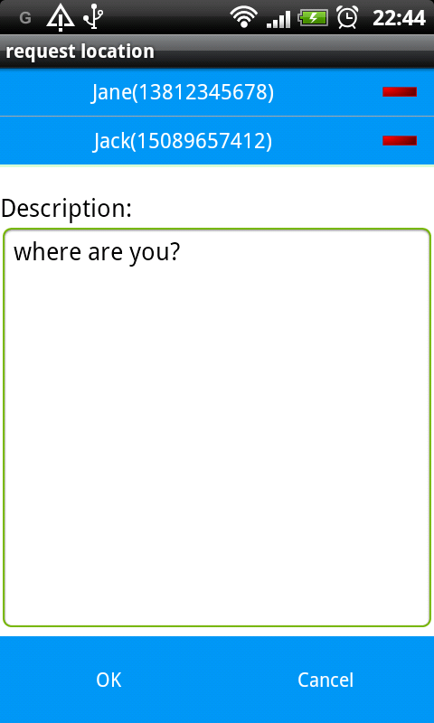

Up to now, a request has been sent to some persons. Next, you just wait for the response.
When an answer from someone has been received, you will get a notification clicking which can guide you
to view the reported location.
The sent requests and received reports can all be viewed in history page.